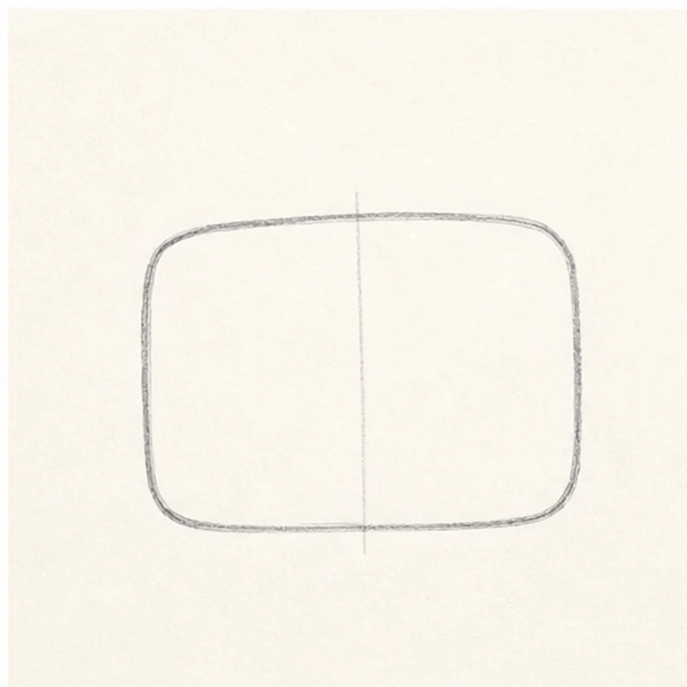
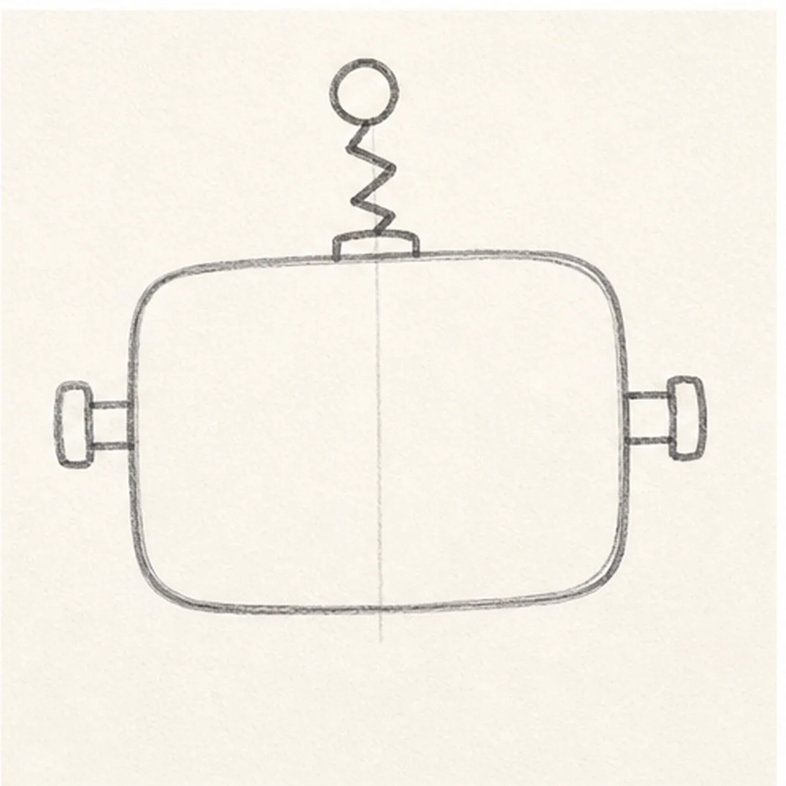
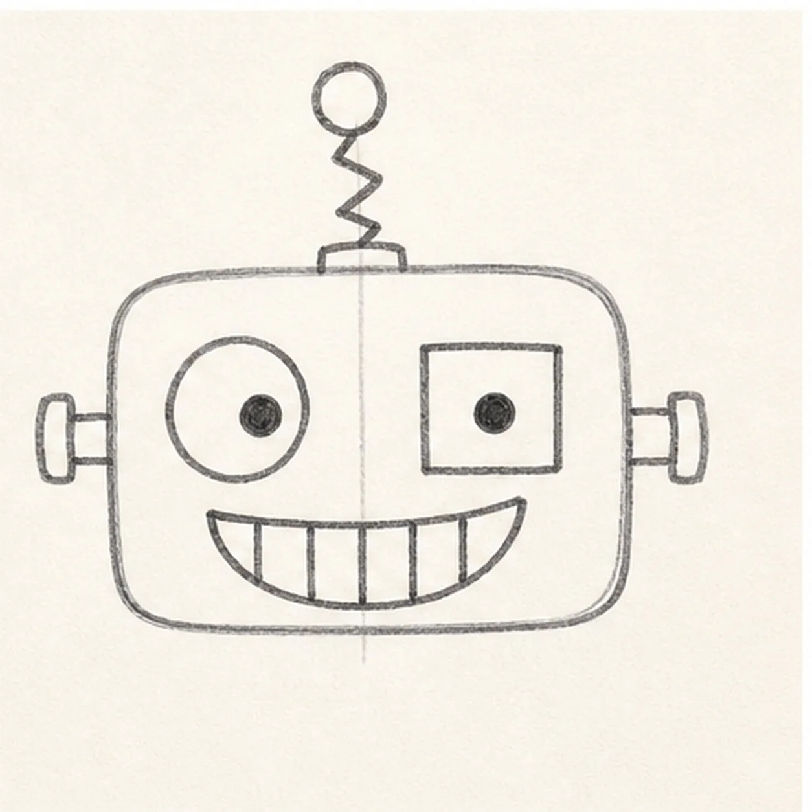
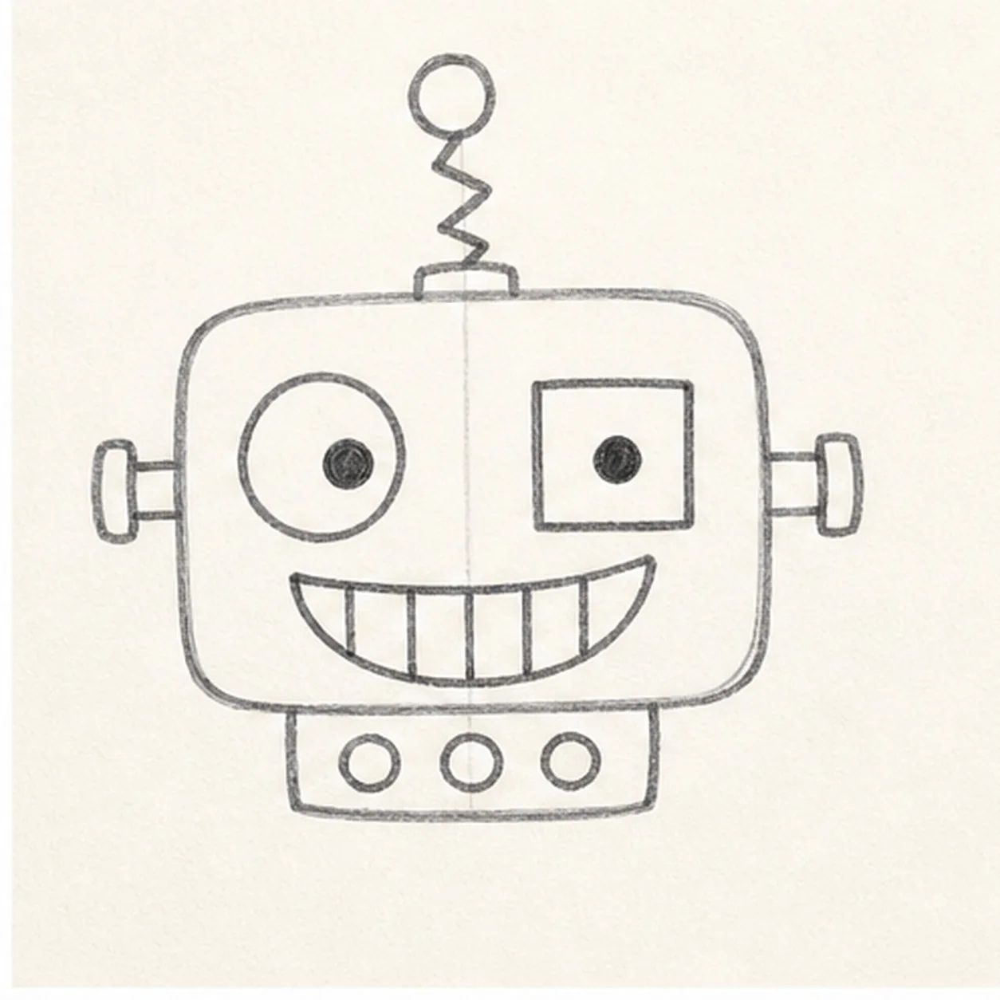
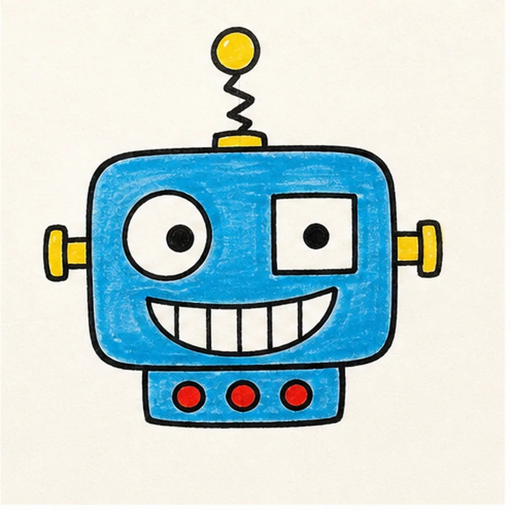

Felt-tip marker mode
Let's doodle a robot head
Treat this as one playful practice round: sketch the idea loosely, simplify the shapes, then commit with confident marker outlines and bright fills.
-
01

Start the head shape
Draw a wide rounded rectangle for the robot head, then add a light center guide down the middle.
Doodle tip: Round the corners generously. A boxy shape with soft corners feels friendlier than a perfect square.
-
02

Add antenna and bolts
Place a zigzag spring antenna on top with a circle at the end, then add short bolt shapes on both sides.
Doodle tip: Keep the side bolts level with each other. That little alignment makes the silly face easier to read.
-
03

Build the robot face
Draw one big round eye, one square eye, small pupils, and a wide curved smile with simple tooth divisions.
Doodle tip: Let the eyes mismatch on purpose. The contrast is what gives this robot its personality.
-
04

Add the button panel
Attach a small rectangle under the head, then draw three round buttons across it.
Doodle tip: Keep the panel narrower than the head so it reads like a small control strip, not a second face.
-
05

Fill the robot color
Fill the head and panel blue, color the antenna and side bolts yellow, and make the three buttons red.
Doodle tip: Color around the eyes and teeth carefully. Leaving those areas white keeps the expression crisp.
-
06

Bolt down the finish
Retrace the head, antenna, bolts, grin, and button panel, deepen the marker fills, and add small white highlights to the head and antenna ball.
Doodle tip: Do not add new parts at the end. The final pass should make the robot bolder, not busier.